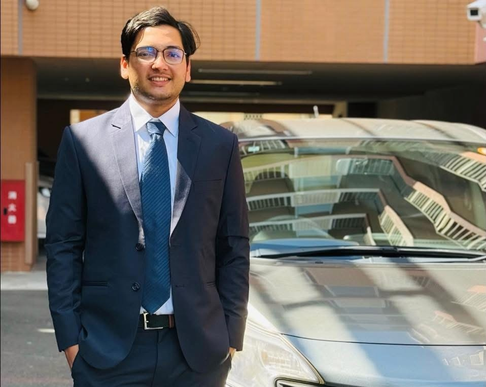
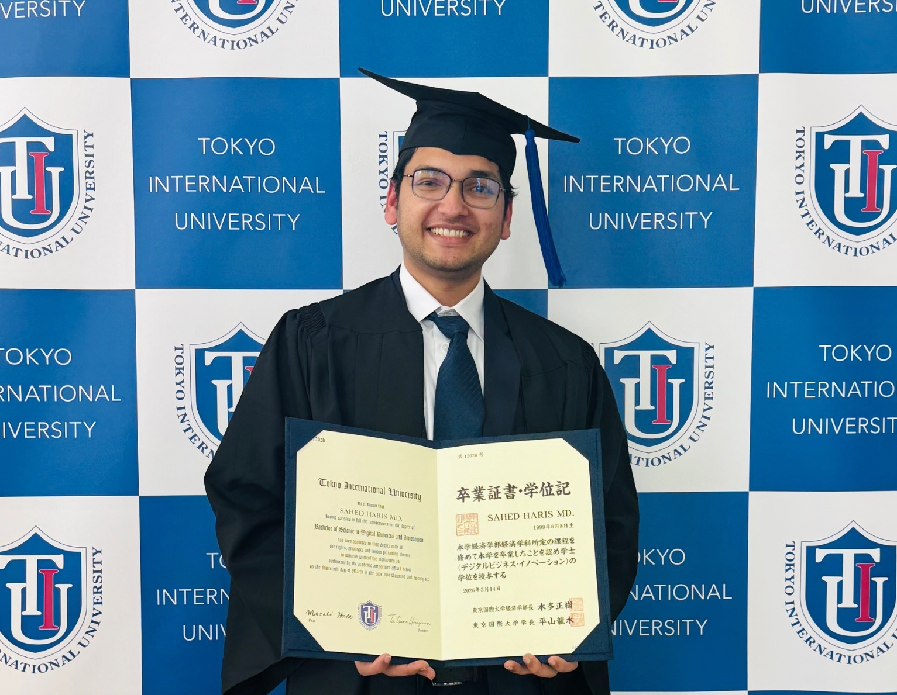

M.Sc. in Computer Science
University of Aizu · Japan
Oct 2026 — PresentComputer Science graduate study under Prof. Mohamed Hamada.
I am a Computer Science Master's student at the University of Aizu with a background in Digital Business & Innovation. My interests connect machine learning, information systems, applied statistics, and data-driven decision-making.

I am a researcher interested in the intersection of machine learning, information systems, data science, and data-driven decision-making. My work focuses on adaptive and interpretable AI systems that can remain useful under limited data conditions.
Coming from a Digital Business & Innovation background and now studying Computer Science, I am particularly interested in research that connects technical AI methods with organizational, business, and decision-making problems.
My research interests combine technical machine learning with information systems and decision-making. I am especially interested in problems where data are scarce, changing, imbalanced, or difficult to interpret.
Computer Science graduate study under Prof. Mohamed Hamada.
Strengthened CS foundations after a DBI background. GPA 4.00 / 4.00: Algorithms & Data Structures, Linear Algebra II, Computer Systems, C Programming.
AI / Data Science Track · GPA 3.741 / 4.00.
Extreme climate event forecasting with machine learning and deep learning, addressing class imbalance, nonstationarity, low signal-to-noise ratios, asynchronous data, and intraday seasonality.
Supported grading and verification of assignments involving descriptive statistics and basic inferential methods.
IEEE AMLDS 2025 — my first conference publication milestone.
Graduated from Tokyo International University with a B.Sc. in Digital Business & Innovation.

Strengthened my CS foundation at University of Aizu. GPA 4.00 / 4.00.
Started M.Sc. in Computer Science at University of Aizu under Prof. Mohamed Hamada.
Preparing applications for PhD opportunities in IS / MIS / Data Science and related areas.
Proceedings of the 2025 International Conference on Advanced Machine Learning and Data Science (AMLDS), Tokyo, Japan.
A diagnostic-driven framework for rare-event detection in high-frequency financial markets, addressing nonstationarity, low signal-to-noise ratios, and imbalanced data.
I am interested in PhD opportunities in Information Systems (IS), MIS, Data Science, Machine Learning, and interdisciplinary AI research — particularly data-driven decision-making, robust AI, business analytics, healthcare systems, and socio-technical applications.
A practical stack for statistical analysis, machine learning experiments, visualization, and reproducible research.
Bachelor of Science in Digital Business & Innovation · Cumulative GPA: 3.741 / 4.000.
12 credits completed across four Computer Science courses.
TOEFL iBT score report · Test score: 92 / 120 · MyBest score: 97 / 120.
Academic documents are publicly available for verification and reference.
For research collaboration, academic opportunities, or PhD-related inquiries:
harismdsahed99@gmail.com